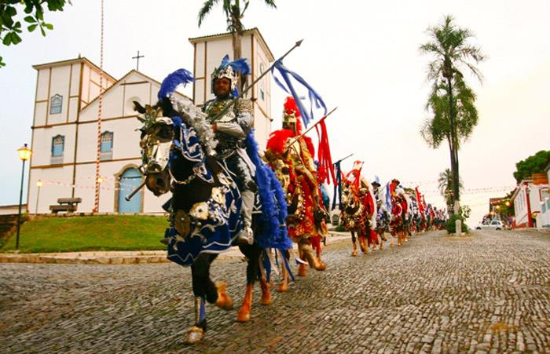
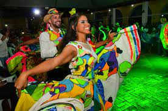
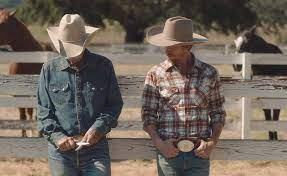
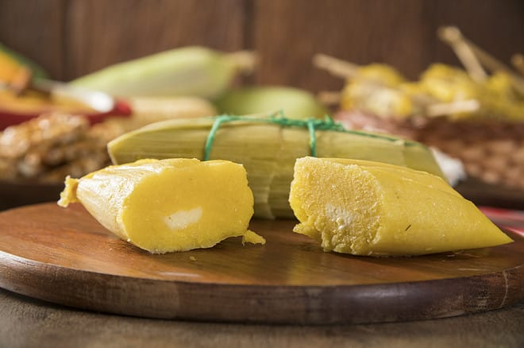

Na região, existe uma diversidade cultural ricamente influenciada pelas culturas indígena, boliviana e paraguaia.
Festas na região Centro-Oeste:
Cavalhada (festa mais conhecida da região. Trata-se da encenação de uma batalha medieval realizada ao ar livre, onde um grupo de cavaleiros se veste de azul, representando os cristãos, e um grupo de cavaleiros se veste de vermelho, representando os mouros) e Fogaréu (é outra importante festa típica da região Centro-Oeste que, igualmente, tem lugar em Goiás e é cartaz turístico. Trata-se de uma procissão em que é encenada a prisão de Jesus e, assim sendo, se realiza na Semana Santa).
Danças da Região Centro-Oeste:
Siriri (De cunho religioso, é dançada por homens e mulheres, inclusive crianças, ao som do ganzá, do mocho e da viola de cocho) e Cururu (é dançado exclusivamente por homens, ao som da viola de mocho, do reco-reco e do ganzá).
Roupas comuns na região Centro-Oeste:
As roupas utilizadas no Centro-Oeste são tão urbanas quanto as utilizadas no restante do país, ou seja, não existe um traje típico específico, alguns exemplos são: chapéu, botas, calças justas, jaquetas/coletes de couro, cintos com grandes fivelas, camisa xadrez, dentre outros.
Culinária da região Centro-Oeste:
Uma vez que a agricultura da Região Centro-Oeste é rica no cultivo de milho, arroz e mandioca, muitos dos pratos típicos da sua gastronomia têm esses ingredientes como base.
